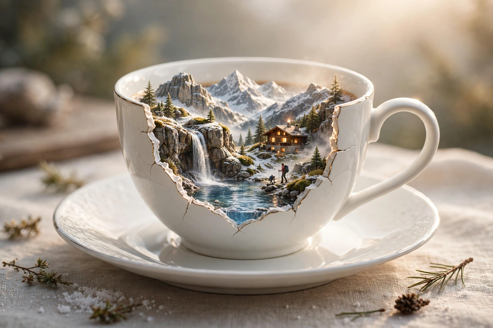

prompt qc wallet - coffee
Create a photorealistic cinematic luxury commercial using the reference coffee-cup image. Start with the premium white porcelain coffee cup resting on

Nội dung prompt
Create a photorealistic cinematic luxury commercial using the reference coffee-cup image. Start with the premium white porcelain coffee cup resting on its elegant saucer. The camera slowly pushes in as the cup magically opens, revealing an impossible miniature alpine world inside: snow-covered mountains, a cozy glowing chalet, waterfall, crystal lake, tiny bridge and a miniature hiker. Warm morning sunlight passes through the scene as tiny details move naturally. The camera smoothly flies toward the miniature landscape, then pulls back for a breathtaking hero reveal showing the entire mountain retreat contained inside the coffee cup. Ultra-realistic miniature scale, premium luxury advertising, cinematic lighting, realistic reflections, shallow depth of field, smooth controlled camera movement, physically believable motion, no distortion, no extra objects, no text changes. 9:16 vertical, exactly 10 seconds. Create a photorealistic cinematic luxury product commercial using the wallet image as the exact visual reference. Start with the premium dark leather wallet completely closed on a polished black marble surface. Slowly push the camera toward the wallet as subtle golden light moves across its textured leather and metallic zipper. The zipper smoothly opens by itself, revealing a breathtaking miniature futuristic city hidden inside. Skyscrapers illuminate one by one, tiny roads activate, miniature cars begin moving, water reflects the city lights, and tiny people walk naturally through the streets. The camera gently moves closer into the opening, creating an impossible sense of scale. Ultra-realistic miniature architecture, physically believable movement, premium luxury advertising, cinematic lighting, realistic reflections, shallow depth of field, smooth macro camera movement, no distortion, no random objects, no extra text.
Prompt cùng thể loại
- thực don cho quán
COFFEE & BEVERAGES MENU Theme: A magical bakery menu comes alive in one continuous gliding shot — the camera…
- Good Morning Coffee (miniature)
PHOTO PROMPT — GOOD MORNING COFFEE | MINIATURE MAN ON A RECEIPT Hyper-realistic cinematic photography…